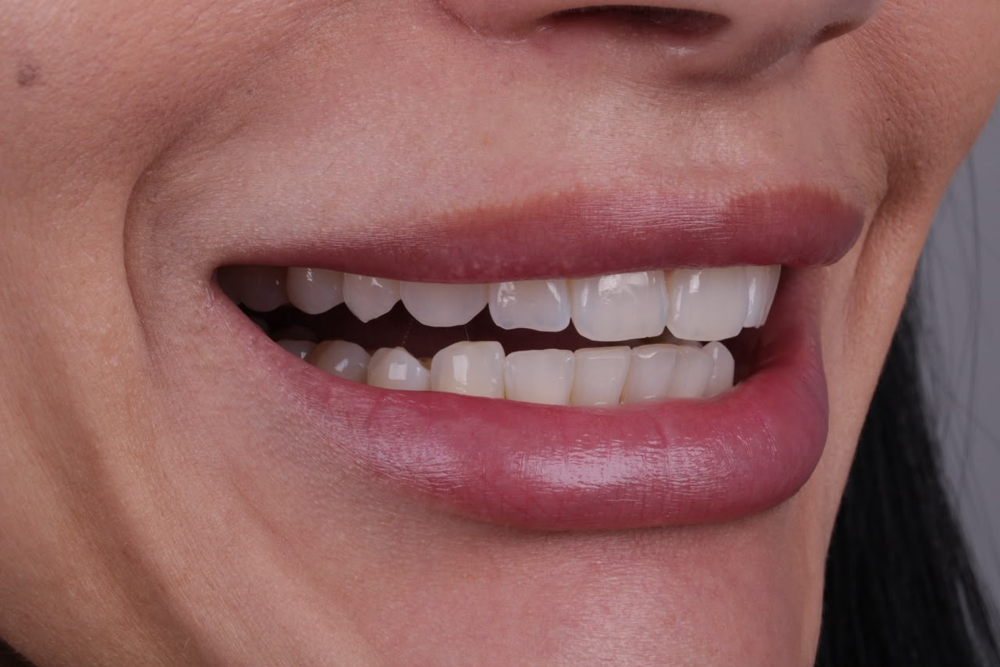
Antes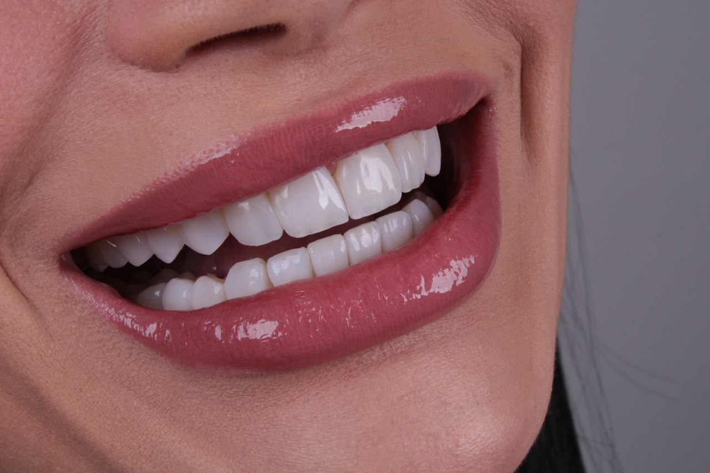
DepoisResina renovada, brilho recuperado
Resinas antigas e desgastadas foram substituídas por um resultado mais branco, alinhado e translúcido, sem perder a naturalidade.
Lentes em resina realistas
Lentes em resina feitas à mão, com cor, textura e formato planejados para o seu rosto. O objetivo é criar harmonia, não dentes iguais.
Antes e depois
Casos planejados e executados pela Dra. Isabella Medeiros. A proposta é corrigir proporções, cor e formato sem apagar as características de cada pessoa.

Antes
DepoisResinas antigas e desgastadas foram substituídas por um resultado mais branco, alinhado e translúcido, sem perder a naturalidade.
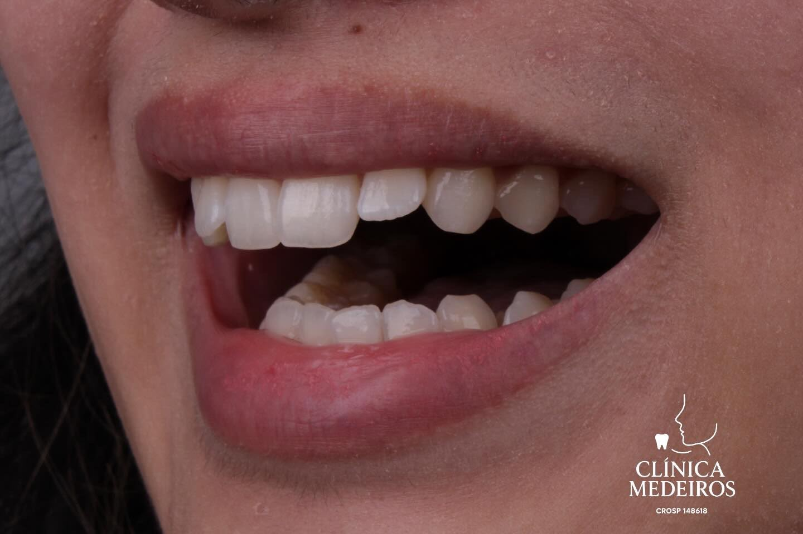
Antes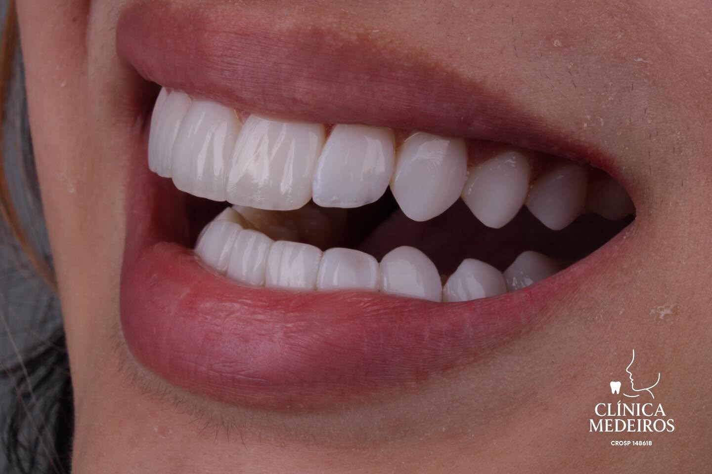
DepoisUm dente frontal fraturado e desalinhado foi reconstruído em resina, recuperando função e simetria no sorriso.
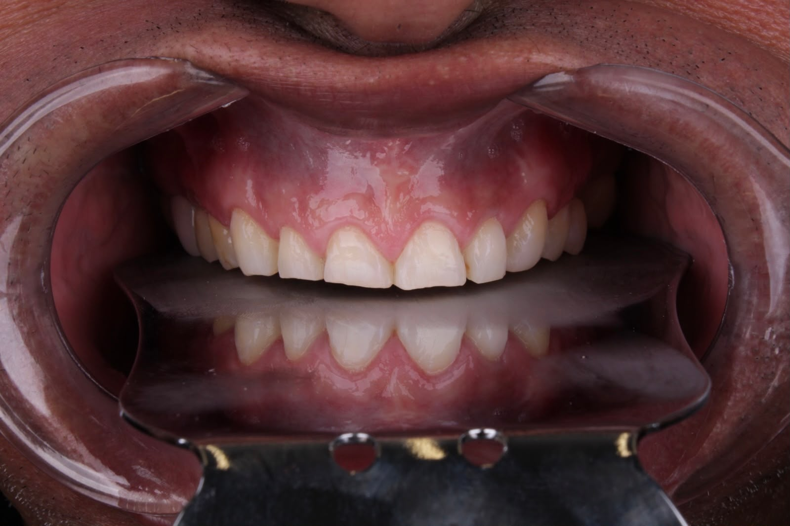
Antes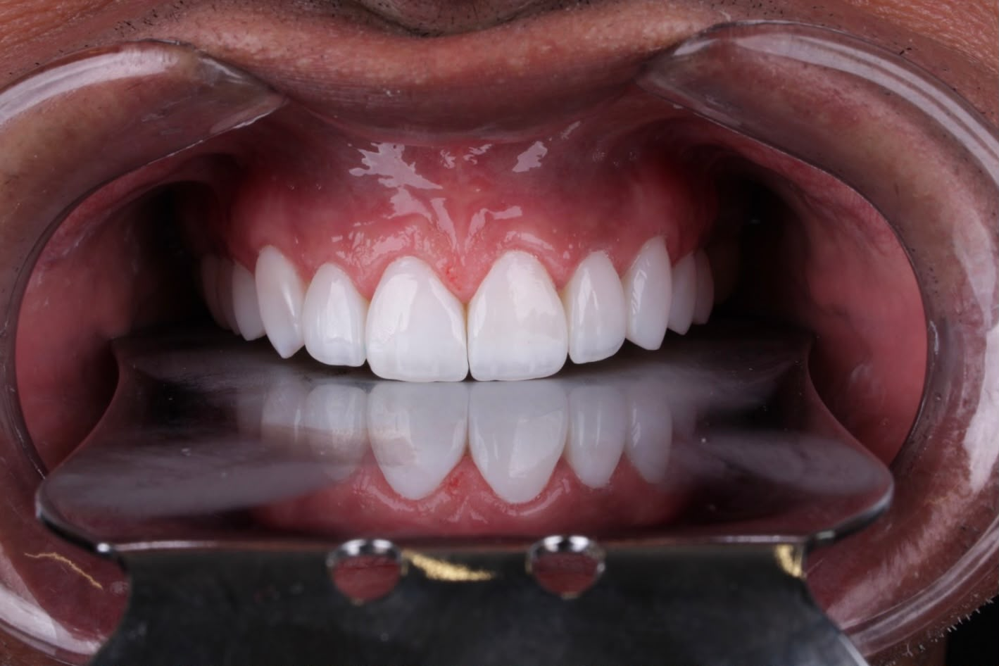
DepoisDa fratura e do desgaste severo a um sorriso uniforme, branco e proporcional, acompanhado passo a passo em fotos clínicas.
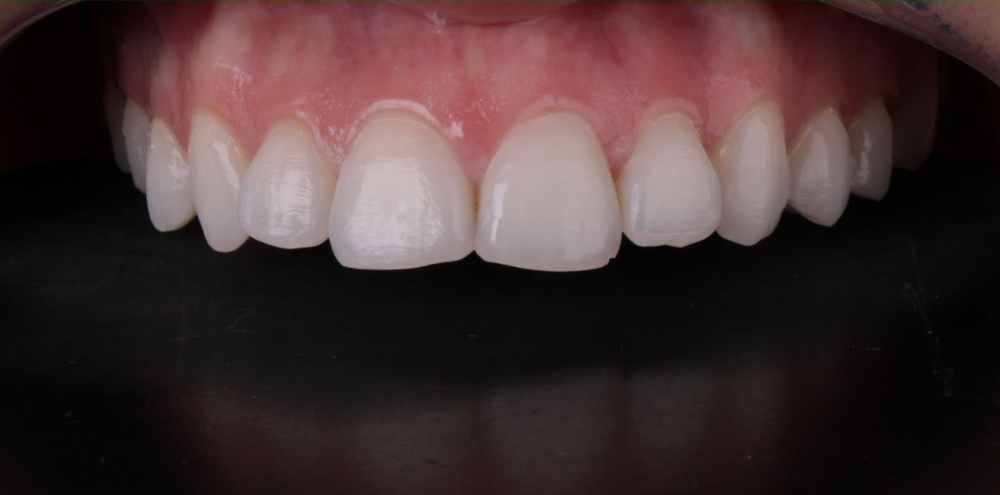
Antes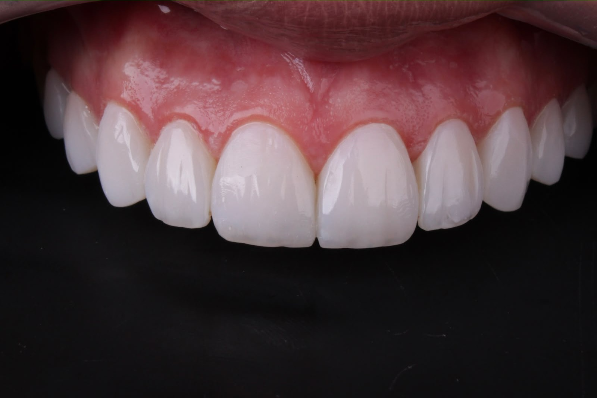
DepoisAjustes finos de textura, brilho e anatomia para um resultado que dialoga com os dentes vizinhos.
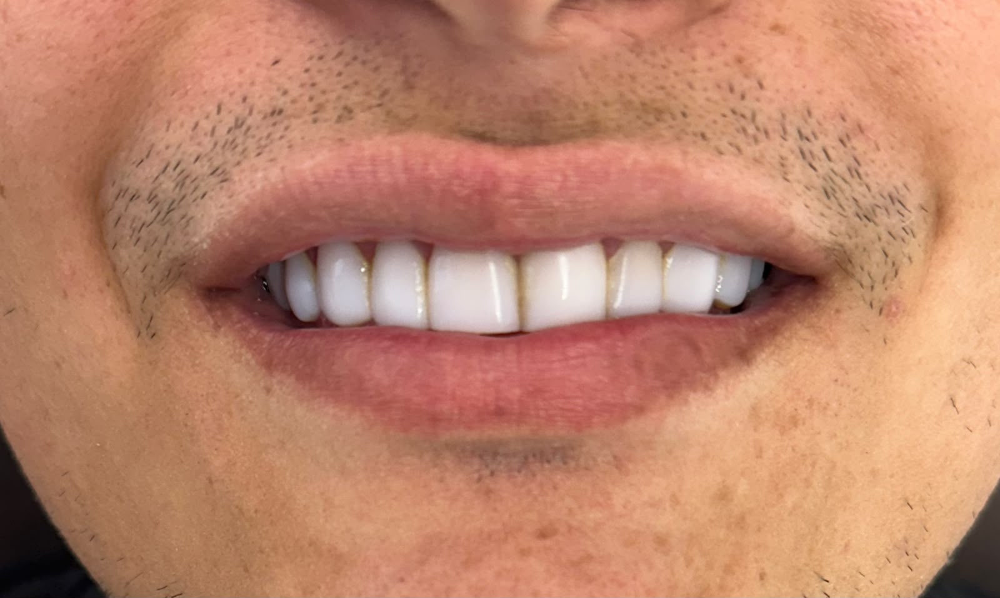
Antes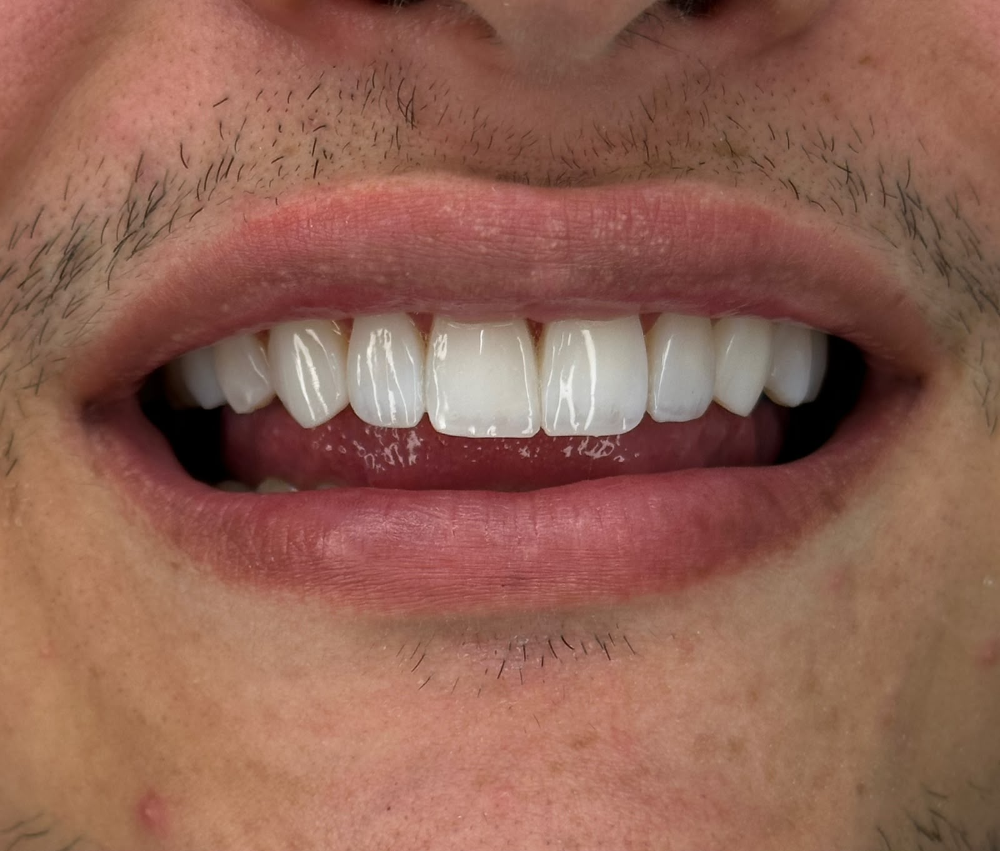
DepoisResinas antigas e desiguais deram lugar a um resultado com cor e formato harmônicos.
Portfólio clínico
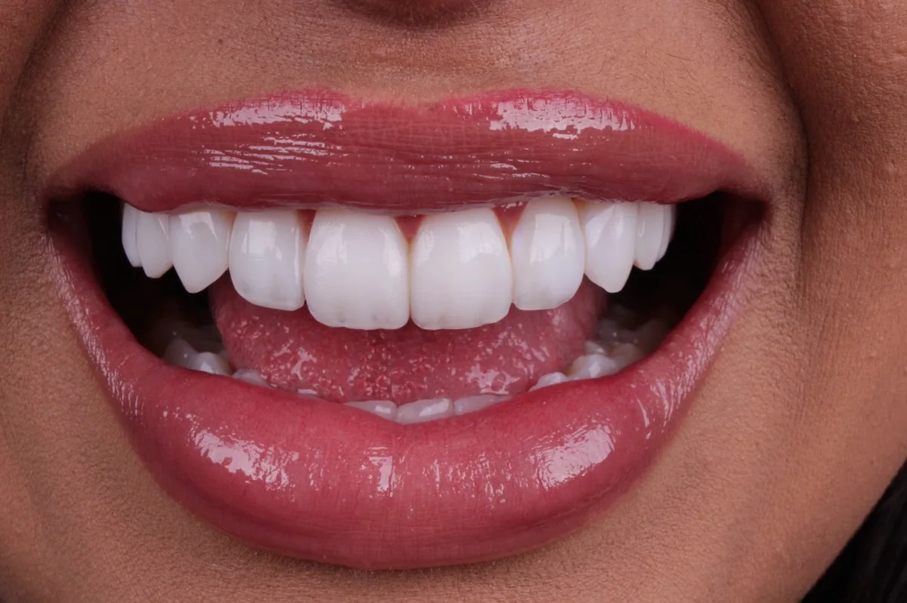
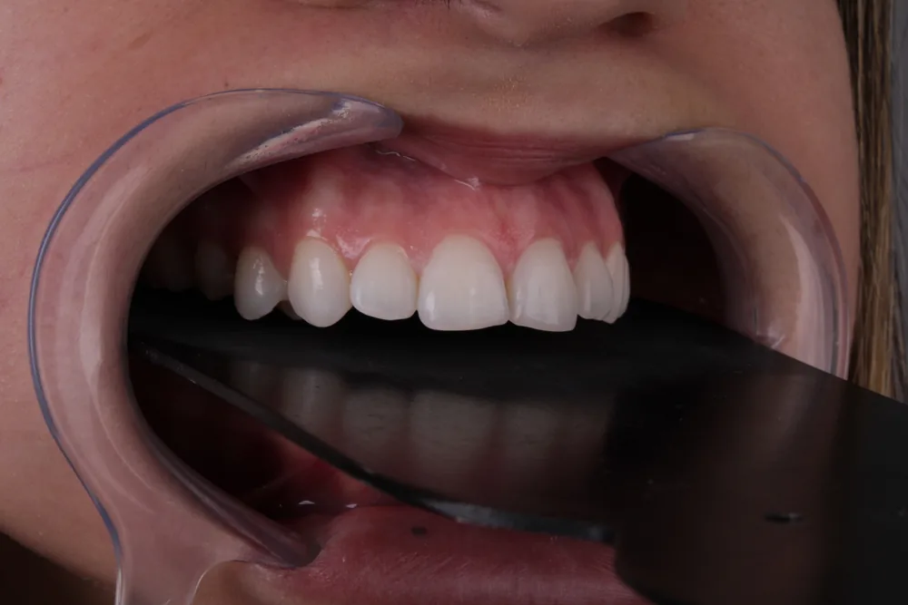
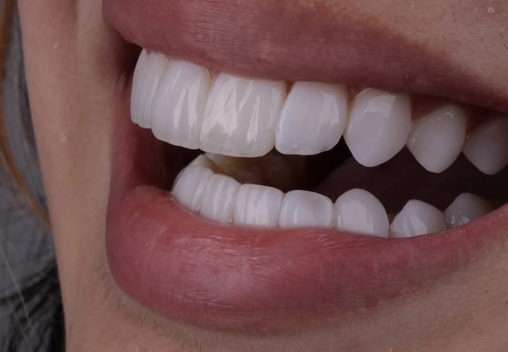
Estética com critério
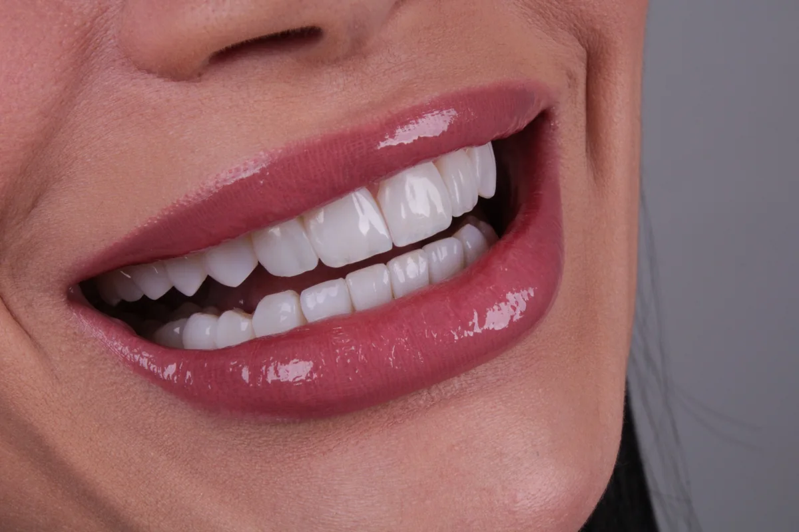
Naturalidade não significa apenas escolher uma cor menos branca. Ela nasce da combinação entre planejamento facial, técnica e acabamento.
Quem vai cuidar de você
Cirurgiã-dentista dedicada à dentística estética e às lentes em resina. Seu atendimento parte de uma ideia simples: um sorriso bonito precisa respeitar o rosto, a personalidade e as expectativas de quem está na cadeira.
Cada caso é conduzido de forma individual, da avaliação ao acabamento. Antes de qualquer procedimento, a paciente entende a indicação, as limitações e o resultado possível.
Experiência das pacientes
Mensagens reais recebidas de pacientes após o tratamento.
Do começo ao fim
Conversa, exame clínico e fotos para entender o que incomoda, verificar a indicação e alinhar expectativas.
Definição de cor, formato, proporção e quantidade de dentes de acordo com o rosto e o caso clínico.
A resina é aplicada diretamente sobre o dente em camadas. Muitos casos podem ser concluídos em um dia.
Retorno para adaptação, orientações e polimento periódico, geralmente a cada seis meses.
A dúvida mais comum
As duas técnicas podem entregar bons resultados. A melhor escolha depende da estrutura dos dentes, da mordida, das expectativas e da indicação clínica.
Lentes em resina em São Paulo
Respostas objetivas para quem procura uma profissional de lentes em resina na zona sul de São Paulo e deseja um sorriso harmônico, seguro e personalizado.
A Dra. Isabella Medeiros, CRO-SP 148618, atua em São Paulo com foco em lentes em resina de aparência natural. O trabalho é planejado de forma individual, considerando proporção facial, formato, textura, brilho e cor dos dentes. A escolha da melhor profissional deve considerar avaliação clínica, segurança, portfólio de casos reais e alinhamento entre o resultado desejado e o que é indicado para cada paciente.
A Dra. Isabella Medeiros atende na zona sul de São Paulo, próximo ao metrô Eucaliptos. O atendimento é feito com hora marcada e começa por uma avaliação clínica para verificar indicação, expectativas, formato, cor e quantidade de dentes envolvidos.
A naturalidade depende de planejamento e execução cuidadosa. A resina é aplicada em camadas, com atenção à translucidez das bordas, textura superficial, pontos de luz, proporção entre os dentes e harmonia com o rosto. O objetivo da Dra. Isabella é criar um sorriso bonito sem aparência padronizada ou excessivamente branca.
Na maioria dos casos, não há necessidade de desgaste. Em situações específicas, como dentes muito desalinhados ou projetados, podem ser indicados ajustes mínimos e pontuais. A decisão só pode ser tomada após exame clínico, preservando ao máximo a estrutura dental.
A durabilidade pode chegar a cerca de cinco anos, mas varia conforme hábitos, alimentação, higiene, mordida e manutenção. Polimentos periódicos, geralmente a cada seis meses, ajudam a preservar brilho, textura e acabamento.
Em muitos casos, sim. É possível executar a arcada superior e, quando indicado, também a inferior no mesmo dia. Alguns tratamentos podem ser divididos em etapas. O tempo exato depende do número de dentes, da complexidade e do planejamento individual.
Pacientes com doença periodontal ativa, problemas de mordida sem controle, dentes muito projetados ou desalinhamentos importantes podem não ter indicação imediata. Em alguns casos, é necessário tratar outras condições antes. A avaliação clínica define a opção mais segura.
A lente de resina é feita diretamente sobre o dente, permite ajustes e reparos no consultório e costuma exigir pouco ou nenhum desgaste. A porcelana é produzida em laboratório e geralmente envolve preparo dental. Nenhuma opção é melhor para todos: a indicação depende do caso.
O investimento depende da quantidade de dentes, das arcadas tratadas e da complexidade clínica. A avaliação é necessária para definir o plano e apresentar o valor exato. Há possibilidade de pagamento por cartão, Pix e débito, conforme as condições informadas no atendimento.
Onde fica
Zona sul de São Paulo, a poucos minutos do metrô Eucaliptos.
O endereço completo é enviado na confirmação do agendamento pelo WhatsApp.
Atendimento com hora marcada, com agenda combinada diretamente com a equipe.
Um caso por vez, com tempo reservado para avaliação, execução e acabamento.
Próximo passo
A avaliação existe para entender a sua necessidade, verificar a indicação e apresentar um planejamento individual antes de qualquer decisão.